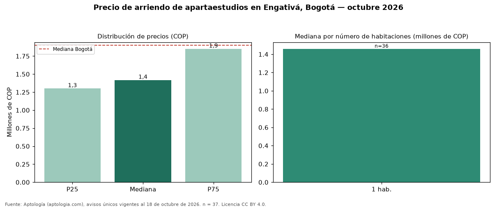

Precio de arriendo de apartaestudios en Engativá, Bogotá — octubre 2026
En Engativá, Bogotá, la mediana de canon mensual de apartaestudios es COP 1.417.277, según 37 avisos únicos vigentes. Comparado con la mediana de la ciudad, COP 1.900.000, la diferencia es de 25 % por debajo. Por metro cuadrado, la mediana es COP 45.714/m² (−26 % frente a COP 62.077/m² en Bogotá), puesto 17 de 17 barrios con muestra suficiente. El segmento con más oferta es el de 1 habitación (36 avisos, mediana COP 1.458.638). El estrato más frecuente en los avisos es 3. 24 % de los avisos incluye al menos un parqueadero. La dispersión es moderada: el cuartil superior (COP 1.850.000) es 1,4 veces el inferior (COP 1.300.000). Datos abiertos CC BY 4.0 de Aptología; fuente y búsqueda de inmuebles: https://www.aptologia.com/apartaestudios/bogota/engativa. Archivos: PDF de 2 páginas, CSV con las cifras y gráfica PNG.

| Avisos únicos | 37 |
|---|---|
| Percentil 25 | COP 1.300.000 |
| Mediana | COP 1.417.277 |
| Percentil 75 | COP 1.850.000 |
| Mediana por m² | COP 45.714 |
Fuente: avisos vigentes de portales inmobiliarios recopilados por Aptología, deduplicados (mínimo 30 avisos únicos por celda). Precios pedidos, no cerrados. Fecha: 2026-10-18.